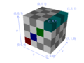

Panda3D Manual: 3dtexture cube.png
{kind=link}
{kind=link}
{kind=link}

No higher resolution available.
3dtexture_cube.png (400 × 300 pixels, file size: 20 KB, MIME type: image/png)
This image was generated with the following program:
from direct.directbase.DirectStart import *
from pandac.PandaModules import *
GridColor = [
VBase3D(0.9, 0, 0),
VBase3D(0, 0, 1),
VBase3D(0, 0.8, 0),
VBase3D(0, 0.7, 0.7)
]
base.setBackgroundColor(1, 1, 1, 1)
stage = render.attachNewNode('stage')
dl = DirectionalLight('dl')
dlnp = base.camera.attachNewNode(dl)
stage.setLight(dlnp)
def make3DTexture(texSize, gridSize):
tex = Texture('grid')
tex.setup3dTexture()
tex.setMagfilter(Texture.FTNearest)
tex.setMinfilter(Texture.FTNearest)
tex.setWrapU(Texture.WMClamp)
tex.setWrapV(Texture.WMClamp)
tex.setWrapW(Texture.WMClamp)
for zi in range(gridSize):
p = PNMImage(texSize, texSize)
for yi in range(texSize):
ym = gridSize * yi / texSize
for xi in range(texSize):
xm = gridSize * xi / texSize
if (xm == zi):
# Color.
color = GridColor[xm]
else:
# White.
color = VBase3D(1, 1, 1)
if ((xm + ym + zi) & 1):
# Dark.
p.setXel(xi, yi, color * 0.6)
else:
# Light.
p.setXel(xi, yi, color)
tex.load(p, zi)
return tex
def drawArrow(arrows, fromPoint, toPoint):
arrow = NodePath('arrowRoot')
arrow.reparentTo(arrows)
ls = LineSegs('line')
ls.setColor(0.4, 0.5, 1, 1)
ls.moveTo(*fromPoint)
ls.drawTo(*toPoint)
arrow.attachNewNode(ls.create())
ls = LineSegs('h2')
ls.setColor(0.4, 0.5, 1, 1)
ls.moveTo(-0.03, 0, -0.07)
ls.drawTo(0, 0, 0)
ls.drawTo(0.03, 0, -0.07)
h1 = arrow.attachNewNode('h1')
h2 = h1.attachNewNode(ls.create())
h2.setBillboardAxis()
h1.setPos(*toPoint)
h1.lookAt(*fromPoint)
h1.setP(h1, 90)
return arrow
def showTextureLevel(tex, zi, x, y):
name = 'grid_%s.png' % (zi)
root = NodePath(name)
root.reparentTo(aspect2d)
root.setPos(x, 0, y)
# Extract out level zi of tex.
p = PNMImage()
tex.store(p, zi)
texLevel = Texture(name)
texLevel.load(p)
cm = CardMaker('card')
cm.setFrame(-0.3, 0.3, -0.3, 0.3)
card = root.attachNewNode(cm.generate())
card.setTexture(texLevel)
ls = LineSegs('frame')
ls.setColor(0, 0, 0, 1)
ls.moveTo(-0.3, 0, -0.3)
ls.drawTo(0.3, 0, -0.3)
ls.drawTo(0.3, 0, 0.3)
ls.drawTo(-0.3, 0, 0.3)
ls.drawTo(-0.3, 0, -0.3)
root.attachNewNode(ls.create())
tn = TextNode('label')
tn.setAlign(TextNode.ACenter)
tn.setTextColor(0.4, 0.5, 1, 1)
tn.setText(name)
label = root.attachNewNode(tn)
label.setPos(0, 0, -0.45)
label.setScale(0.1)
return root
# Make the three arrows.
arrows = render.attachNewNode('arrows')
xarrow = drawArrow(arrows, (0, -0.1, -0.1), (1, -0.1, -0.1))
yarrow = drawArrow(arrows, (1.1, 0, -0.1), (1.1, 1, -0.1))
zarrow = drawArrow(arrows, (-0.1, -0.1, 0), (-0.1, -0.1, 1))
# Make the five corner labels.
labels = aspect2d.attachNewNode('labels')
labels.setScale(0.1)
tn = TextNode('label')
tn.setTextColor(0.4, 0.5, 1, 1)
tn.setText('(0, 0, 0)')
tnp000 = labels.attachNewNode(tn.generate())
tnp000.setPos(-8, 0, -4.5)
tn.setText('(0, 0, 1)')
tnp001 = labels.attachNewNode(tn.generate())
tnp001.setPos(-9, 0, 5.5)
tn.setText('(0, 1, 1)')
tnp011 = labels.attachNewNode(tn.generate())
tnp011.setPos(-1.5, 0, 8.5)
tn.setText('(1, 1, 1)')
tnp111 = labels.attachNewNode(tn.generate())
tnp111.setPos(8, 0, 7)
tn.setText('(1, 1, 0)')
tnp110 = labels.attachNewNode(tn.generate())
tnp110.setPos(7.8, 0, -2.5)
tn.setText('(1, 0, 0)')
tnp100 = labels.attachNewNode(tn.generate())
tnp100.setPos(1.2, 0, -8)
tn.setText('(1, 0, 1)')
tnp101 = labels.attachNewNode(tn.generate())
tnp101.setPos(2, 0, 3)
tn.setSlant(0.2)
tn.setText('u')
tnpU = labels.attachNewNode(tn.generate())
tnpU.setPos(-3, 0, -7.5)
tn.setText('v')
tnpV = labels.attachNewNode(tn.generate())
tnpV.setPos(6.2, 0, -6.5)
tn.setText('w')
tnpW = labels.attachNewNode(tn.generate())
tnpW.setPos(-8.3, 0, 0)
tex = make3DTexture(128, 4)
tex.writePages(Filename('grid_#.png'))
stage.setTexGen(TextureStage.getDefault(), TexGenAttrib.MWorldPosition)
stage.setTexture(tex, 1)
box = loader.loadModel('box.egg')
box.reparentTo(stage)
base.disableMouse()
camera.setPos(2.3, -2.3, 2.3)
camera.setHpr(35, -30, 0)
base.graphicsEngine.renderFrame()
base.screenshot('3dtexture_cube.png', defaultFilename = 0)
box.hide()
smiley = loader.loadModel('smiley')
smiley.reparentTo(stage)
smiley.setScale(0.5)
smiley.setPos(0.5, 0.5, 0.5)
base.graphicsEngine.renderFrame()
base.screenshot('3dtexture_sphere.png', defaultFilename = 0)
smiley.hide()
teapot = loader.loadModel('teapot.egg')
teapot.reparentTo(stage)
teapot.setScale(0.2)
teapot.setPos(0.44, 0.5, 0.2)
base.graphicsEngine.renderFrame()
base.screenshot('3dtexture_teapot.png', defaultFilename = 0)
# Finally, show the levels of the texture.
stage.hide()
labels.hide()
arrows.hide()
l0 = showTextureLevel(tex, 0, -0.5, 0.5)
l1 = showTextureLevel(tex, 1, 0.5, 0.5)
l2 = showTextureLevel(tex, 2, -0.5, -0.4)
l3 = showTextureLevel(tex, 3, 0.5, -0.4)
base.graphicsEngine.renderFrame()
base.screenshot('3dtexture_levels.png', defaultFilename = 0)
|
File history
Click on a date/time to view the file as it appeared at that time.
| Date/Time | Thumbnail | Dimensions | User | Comment | |
|---|---|---|---|---|---|
| current | 12:33, 8 October 2005 |  | 400 × 300 (20 KB) | Drwr (Talk | contribs) |
- Edit this file using an external application (See the setup instructions for more information)
{kind=link}
File usage
The following 4 pages link to this file:
{kind=link}
{kind=link}
{kind=link}
| Back to the Manual |
© Carnegie Mellon University 2010